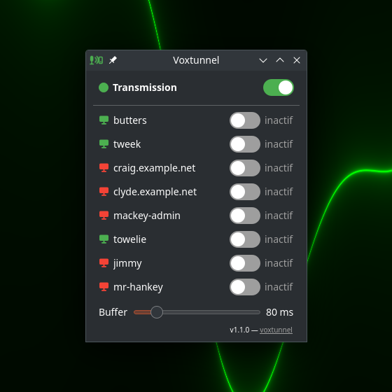

The local voice, tunneled straight to the servers.

Voxtunnel reads ~/.ssh/config and gives every host with a key its own switch. Nothing to declare, nothing to duplicate.
One click cuts every stream without losing the per-host selection. Flipped back, the streams whose switch is ON return.
The window is optional: the tray icon carries the same switches in its menu. Green icon while transmission is on, red crossed icon when the line is cut.
Audio lands in the snd-aloop loopback card. Speech-to-text, voice assistants or Claude Code voice input record it like local hardware.
A monitor glyph per host shows if the far end is ready. A dead stream flips its own switch off and says why. Latency is a slider, not a mystery.
# from github.com/remmmi/voxtunnel/releases/latest sudo apt install ./voxtunnel-server_*.deb # loads snd-aloop now and at every boot - purely additive
sudo apt install ./voxtunnel_*.deb
voxtunnel
git clone https://github.com/remmmi/voxtunnel.git cd voxtunnel/client ./install.sh # menu launcher; --autostart for session start python3 voxtunnel-tray.py # server side from the same clone, as root on the VPS: # sudo ../server/setup-vps.sh --persist
VPS_HOST=user@my-vps ./voxtunnel.sh --check VPS_HOST=user@my-vps ./voxtunnel.sh